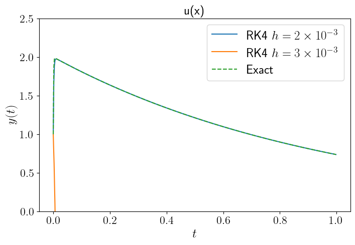
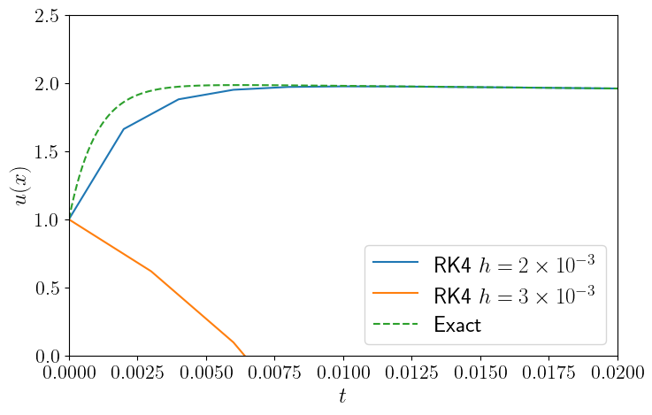
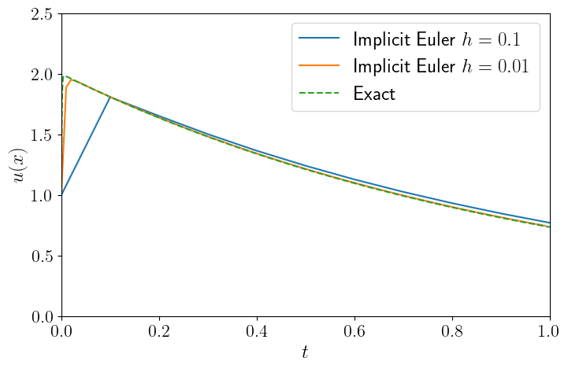

Last time we talked about:
All Runge-Kutta methods can be summarized in the following way:
$$ y_{n+1} = y_n + h\sum_{i = 1}^{s}b_i k_i $$where:
$$ k_i = f\left(x_n + c_i h, y_n + h \sum_{j=1}^{i-1}a_{ij}k_j\right),\quad i = 1, 2, \ldots, s $$where $s$ is the number of "stages" in the method. The method is completely specified by the coefficients $a_{ij}$, $b_i$, and $c_i$.
How many parameters in total?
It's customary to list the coefficients in the Butcher tableau:
$$ \begin{array}{c|cccccs} c_1 & & & & & & \\ c_2 & a_{21} & & & & & \\ c_3 & a_{31} & a_{32} & & & & \\ c_4 & a_{41} & a_{42} & a_{43} & & & \\ \vdots & \vdots & \vdots & \vdots & \ddots & & \\ c_s & a_{s1} & a_{s2} & a_{s3} & \cdots & a_{s,s-1} & \\ \hline & b_1 & b_2 & b_3 & \cdots & b_{s-1} & b_s \end{array} $$How to determine the coefficients?
We need to match the Taylor expansion of $y(x_n + h)$ to the Runge-Kutta formula to a desired order. The Taylor expansion is: $$ y(x_n + h) = y(x_n) + hy'(x_n) + \frac{h^2}{2}y''(x_n) + \frac{h^3}{6}y^{(3)}(x_n) + \frac{h^4}{24}y^{(4)}(x_n) + \ldots $$
Using the chain rule on the ODE $y' = f(x, y)$, we can express the higher order derivatives using partial derivatives of $f$:
$$ \begin{align} y' &= f \\ y'' &= f_x + f_y f \\ y^{(3)} &= f_{xx} + 2f f_{xy} + f f_y^2 + f_x f_y + f^2 f_{yy} \\ y^{(4)} &= f_{xxx} + 3f f_{xxy} + 3f^2 f_{xyy} + f^3 f_{yyy} + 3f_x f_{xy} + 5f f_y f_{xy} \\ &\quad + 3f f_x f_{yy} + f_{xx}f_y + f_x f_y^2 + f f_y^3 + 4 f^2 f_y f_{yy} \\ \dots \end{align} $$For example, lets plug in a 2nd order Runge-Kutta method with 2 stages:
$$ \begin{align} k_1 &= f(x_n + c_1 h, y_n) \\ &\approx f + c_1 h f_x \\ k_2 &= f\left(x_n + c_2 h, y_n + h a_{21} k_1\right) \\ &\approx f + c_2 h f_x + a_{21} h k_1 f_y \\ &\approx f + c_2 h f_x + a_{21} h f f_y \end{align} $$Then, the Runge-Kutta formula gives: $$ y_{n+1} = y_n + h(b_1 k_1 + b_2 k_2) = y_n + h(b_1 + b_2)f + h^2(b_1 c_1 + b_2 c_2)f_x + h^2 b_2 a_{21} f f_y $$
We need to match with the Taylor expansion: $$ y(x_n + h) = y(x_n) + hy'(x_n) + \frac{h^2}{2}y''(x_n) + \ldots = y_n + h f + \frac{h^2}{2}(f_x + f f_y) + \ldots $$
The matching equations become: $$ \begin{align} b_1 + b_2 &= 1 \\ b_1 c_1 + b_2 c_2 &= \frac{1}{2} \\ b_2 a_{21} &= \frac{1}{2} \end{align} $$
There are 5 unknowns and 3 equations, so we can choose 2 of them arbitrarily. For example, if we choose $c_1 = 0$ and $b_2 = 1$, then we get the midpoint method: $$ \begin{array}{c|cc} 0 & & \\ 1/2 & 1/2 & \\ \hline & 0 & 1 \end{array} $$
It turns out that for any order higher than 4, more than 4 stages are needed, or equivalently more than 4 intermediate $k_i$'s are needed. This makes RK4 a sweet spot for accuracy vs efficiency.
Here's a 5th order Runge-Kutta method by Dormand-Prince, one of the many possible 5th order methods:
How many evaluations of $f$?
Consider the following set of equations:
$$ \begin{align} \frac{du}{dx} &= 998u + 1998v \\ \frac{dv}{dx} &= -999u - 1999v \end{align} $$with initial conditions $u(0) = 1$ and $v(0) = 0$.
Solving it using RK4:
Solving it using RK4:
The exact solution is:
$$ \begin{align} u(x) &= 2e^{-x} - e^{-1000x} \\ v(x) &= -e^{-x} + e^{-1000x} \end{align} $$At the beginning of the integration, the second term rapidly drops to zero. If this process is not resolved correctly, then numerical solutions becomes completely off.
Due to this rapid change at small length scales, this problem is stiff.
Stiffness often occurs in a problem where there are two very different scales of $x$ where $y$ is changing.
This occurs more often than you might think. Consider the following chemical reaction:
$$ \begin{align} A &\xrightarrow{0.04} B \\ B + B &\xrightarrow{3\times 10^7} C + B \\ B + C &\xrightarrow{1\times 10^4} A + C \end{align} $$The concentration of chemicals $A$, $B$, and $C$ are described by the following differential equations:
$$ \begin{align} \frac{dA}{dt} &= -0.04A + 10^4BC \\ \frac{dB}{dt} &= 0.04A - 3\times 10^7B^2 - 10^4BC \\ \frac{dC}{dt} &= 3\times 10^7B^2 \end{align} $$Consider the simple equation:
$$ \frac{dy}{dx} = -\lambda y, \quad \lambda > 0 $$Let's apply the simple Euler method to solve it:
$$ y_{n+1} = y_n + h(-\lambda y_n) = (1 - h\lambda)y_n $$How does $|y_n|$ behave as $n \to \infty$?
For our simple Euler method on the sample equation:
$$ |y_{n+1}| = |(1 - h\lambda)y_n| = |1 - h\lambda||y_n| = |1 - h\lambda|^{n+1} |y_0| $$So, if $|1 - h\lambda| < 1$, then $|y_n| \to 0$ as $n \to \infty$. This is the correct behavior.
If $|1 - h\lambda| > 1$, then $|y_n| \to \infty$ as $n \to \infty$. This causes unstable behavior. The stability criteria is $h < 2/\lambda$.
If $\lambda$ is large, then $h$ needs to be very small!
We can generalize this to a set of linear equations:
$$ \frac{d\mathbf{y}}{dx} = -\mathbf{A}\cdot\mathbf{y} $$where $\mathbf{A}$ is an $n\times n$ matrix.
If we apply the Euler method to this system, we get:
$$ \mathbf{y}_{n+1} = \mathbf{y}_n + h(-\mathbf{A}\cdot\mathbf{y}_n) = (1 - h\mathbf{A})\mathbf{y}_n = (1 - h\mathbf{A})^n \mathbf{y}_0 $$If $\mathbf{A}$ is diagonalizable, with eigenvalues $\{\lambda_i\}$ and eigenvectors $\{\boldsymbol{\xi}_i\}$, then we can expand $y_0$ in terms of the eigenvectors:
$$ \mathbf{y}_0 = \sum_i c_i\boldsymbol{\xi}_i $$Then, we can write:
$$ \mathbf{y}_n = \sum_i c_i(1 - h\lambda_i)^n\boldsymbol{\xi}_i $$For stability, we need $|1 - h\lambda_i| < 1$ for all $i$. Otherwise one of the components may blow up. The criteria becomes:
$$ h < \frac{2}{|\lambda_\mathrm{max}|} $$A system of equations is stiff if $|\lambda_\mathrm{max} / \lambda_\mathrm{min}| \gg 1$.
The system we looked at in the beginning has the following matrix:
$$ \mathbf{A} = \begin{pmatrix} 998 & 1998 \\ -999 & -1999 \end{pmatrix} $$Its diagonalized form is:
$$ \mathbf{A}_\mathrm{diag} = \begin{pmatrix} -1000 & 0 \\ 0 & -1 \end{pmatrix} $$Consider the following modification to Euler's method:
$$ y_{n+1} = y_n + h y'_{n+1} $$$y'_{n+1}$ is the derivative $dy/dx$ evaluated at step $n+1$. Then applying this to our simple equation $y' = -\lambda y$, we get:
$$ y_{n+1} = y_n - h\lambda y_{n+1},\quad y_{n+1} = \frac{y_n}{1 + h\lambda} $$Now this is absolutely stable. As long as $\lambda > 0$, you always get decreasing $|y_n|$.
The method we constructed is called the implicit Euler's method. How do we actually carry it out?
We need to solve the following equation at every step:
$$ y_{n+1} = y_n + h f(x_n + h, y_{n+1}) $$Remember root-finding?
Implicit Euler using large time steps:
A way to avoid solving a nonlinear equation at every step is to linearize it:
$$ y_{n+1} = y_n + h\left[ f(y_n) + \left.\frac{df}{dy}\right|_{y_n}(y_{n+1} - y_n)\right] $$Rearranging terms, we get:
$$ y_{n+1} = y_n + h\left(1 - h\frac{df}{dy}\right)^{-1} f(y_n) $$This is called the semi-implicit Euler's method.
Semi-implicit methods are typically much more stable than explicit schemes, but it's not guaranteed. To guarantee stability, one needs to solve the nonlinear equation for $y_{n+1}$ at every step to a target tolerance.
In the case of multiple-equation systems, the equation for $\mathbf{y}_{n+1}$ is a nonlinear multi-variable equation:
$$ \mathbf{y}_{n+1} = \mathbf{y}_n + h \mathbf{f}(\mathbf{y}_{n+1}) $$We will cover how to solve this type of equations in the later parts of this course.